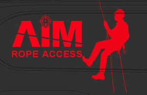

Trade Mark Journal No.2025/039 26 September 2025
UK00004258446 3 September 2025 (12,22,37,41,42,44,45)

- Class 12
- Rescue boats.
- Class 22
- Climbing ropes; Anchoring ropes.
- Class 37
- Construction via industrial rope access; Cleaning via industrial rope access; Maintenance of railway track; Highway maintenance; Building maintenance; Pipeline construction and maintenance; Maintenance of buildings; Maintenance and repair of buildings; Construction of railways; Building maintenance and repair; Maintenance and repair of ballast lines; Repair or maintenance of signboards; Machinery installation, maintenance and repair; Maintenance and repair of utilities in buildings; Maintenance and repair of gates; Rail infrastructure construction; Maintenance of property; Property maintenance; Maintenance and repair of residential buildings; Maintenance and repair of security systems; Maintenance and repair of security installations; Maintenance and repair of office buildings; Pest control services, other than for agriculture, horticulture and forestry; Pest control services, other than for agriculture, aquaculture, horticulture and forestry; Construction services; Steeplejack services.
- Class 41
- Training services; Commercial training services; Training services for personnel.
- Class 42
- Structural surveying via industrial rope access; Inspection and testing via industrial rope access.
- Class 44
- Garden maintenance; Lawn maintenance services; Forestry services; Agricultural, horticulture and forestry services; Agriculture, horticulture and forestry services; Agriculture services; Agricultural services; Arboricultural services; Pest control services for agriculture, horticulture and forestry; Pest control services for agriculture, aquaculture, horticulture and forestry; Gardening services.
- Class 45
- Rescue of people.
Access Inspection Maintenance LTD
Access Inspection Maintenance Trading as AIM Rope Access